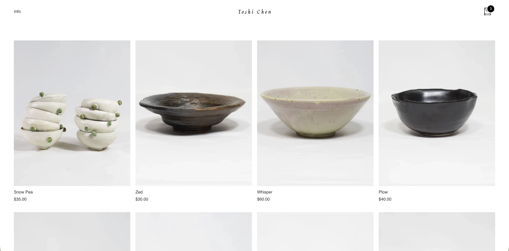

From the Studio




About
Verisimilitude Studio is founded by Michelle and Jenna, who first connected as product designers while working together at Meta. We are an independent practice built on a shared foundation of authenticity and intentionality. We exist to craft work that reflects our values and challenges the conventional.
Together, we bring 20 years of combined industry experience across startups and Big Tech. We work with founders and teams that value a human touch to build products from scratch or scale them globally.
Our design process centers on observing nature, making things by hand, and holding open conversations with collaborators. Then, we identify simple and effective design solutions for you. Ultimately, AI does not replace our judgement, as we use it to simply execute on human-centered ideas.
Services
Please contact us at hello@veris.design to get things started.Please contact us to get things started.
- Marketing WebsitesNew websites
Website refreshes
Product storytelling
Product visualization - Brand IdentityVisual identity
Art direction
Brand guidelines